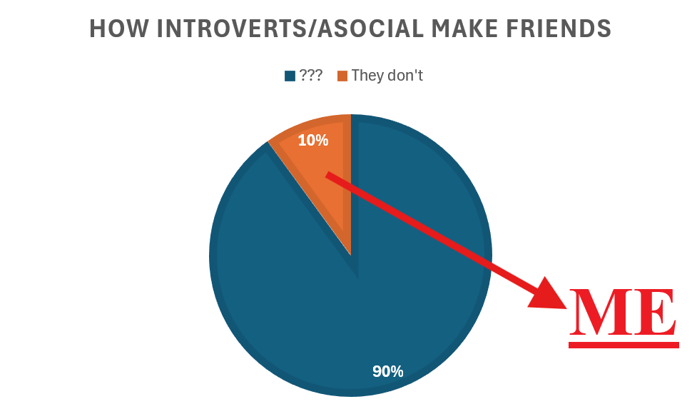
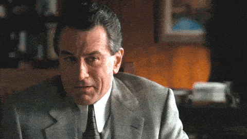
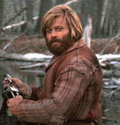
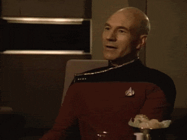

Looking for friends? Great (me too). This is a great place to start. Don't dare to go away!
Sooo first of all, pls note that I'll be more scared of you than you're scared of me.
As you may have guessed at this point I do not excel in forming connections with people. In fact I'm
rather clueless.
But bruh - they say - humans needs social interactions to work and yadda yadda yadda...
yeah sure, you'll have read this hungreds of times didn't ya?
Now, many of you (I assume you come from reddit) will certainly be familiar with the following meme format,
representing the condition afflicting many of us:

This is a meme which was in one form or another published on the r/introvert subreddit quite a lot.
As can clearly be seen in this graphical representation of loneliness, which to be completely fair I
originally
imagined it to be way funnier than this, I happened to fall into that
category of introvert/asocial/weirdos which mostly failed to find someone to be friend with (actually that's
not
completely true but I'll elaborate later or after we meet if relevant).
It happens!
And pherhaps... this also apply to you!
Otherwise why are you
here!? Go spend time with your actual friends you slutty not-friendless whore!
So, as an engineer, I like to think of me like a solution oriented
individual.
Therefore, here's like it's gonna work. If you feel like, read around, and then just DM me.
Like you'd do with a normal person which I definitely am.
What I offer is some kind of relationship which may or may not evolve into a friendship at some point. No
terms
and conditions.
I'll be your friend.
If you scare the shit out of me I'm out.
What's a friendship for me and what I'm looking for:
What's a friend? It could be or imply many things actually. I'm quite open minded in that regard but
you'd
decide. What's
important now though it's not what a friendship could eventually be but rather what a friendship
tipically
is at the beginning.
And that's very straightforward. I'm looking for a person with whom
playing games, watching anime, or in general, doing activities . Doing stuff
together.
That's it.
EVEN IRL (if you live reasonably close to me, meaning in Sardinia, Italy).
That's the core. Other things require at least a minimal amount of time to develop.
My personality:
I'm fearful like a stray cat (pls don't laugh). Afraid of the dark, huh. A bit asocial in the sense that
in many situations
I'd rather stay at home than going in a place with people.
I'm curious by nature, and there are very few topics I'm actively uninterested in.
I like cats and most animals (NOT SNAKES). But I'm not vegan or anything.
I don't ghost or anything and I have really few dealbreakers:
I don't tolerate arrogance and people who don't respect boundaries, that's it.
What I like:
I'm interested in old consumer and media technology, especially from the 70s and 80s and 90s.
I'm also interested in old HiFi systems (don't worry though I'm not an audiophile).
And also scifi, animation, data hoarding, history (I like listening to podcast), architecture (perhaps
my
next major but I'm not sure), and many more things I don't remember now.
I enjoy fantasy anime and isekais from time to time.
Pretty much everything but fitness and pseudosciences.
Stuff I'm open up to do:
✅One of more of the following:
Online:
 - Playing games (please refer to the list below)
- Playing games (please refer to the list below)
- Chatting (initially via text only, sorry I'm shy)
- Roleplaying (I'd be a beginner, wether we'd do that in italian or in english)
- Starting a hobby project (a simple game, a novel, or other things). This one later though, I'm a bit
crammed
now
- Watching anime or tv series
In real life:
- All of the above but in the same room. Better if in a cozy place.
- Hiking in nature (south Sardinia)
- Playing game in split screen (Mario Kart and stuff like that)
- Visiting museums, or cities, or villages, or places
- Visiting shops. Any shop it'd be ok. If I had to pick I'd say thrift stores, and maybe manga shops
- Any other activity which is proposed unless it fall under...
❌Stuff I'd prefer to avoid instead:
Online:
- Sexting. I mean it'd be tolerable within the scope of a roleplay but I'd prefer to focus on other
things.
- I'm not open to online romantic relationship.
In real life:
- Going to disco, parties, or crowed noisy places. Pls no.
- Going to the beach / sea. Not really my thing. I get bored staying there all day, then sand is sticky
and it gets everywhere and it's uncomfortable. I'm more a mountain/forest guy.
Now of course nothing is set on stone, these are just preferences. If you wanna propose something
different that's accepted and encouraged.
Kind of games I'm into (I play on PC):
- I'm ok for any kind of sandbox game.
- Minecraft is goat. I usually play vanilla but I woudn't dislike playing modded, I'd like to try the
create mod.
I CAN HOST A SERVER (only vanilla for now). And like, I'm not jelaous like if you wanna a copy of the
world
I'll
give that to you, like a backup huh, but don't use that to cheat (it'd ruin the game)!
- More advanced sandbox games (Space Engineers, Scrap Mechanic, others...) are ok too.
- Life sims and cozy games of any kind (Stardew Valley, and so on) totally up to as well.
- Survival games (Raft) also into those. Especially if building is involved.
- FPS and similar I haven't played them for a while and I was never good, but I think I own Battlefield
V
and
some others. Haven't opened them in years. I used to like TF2.
- Horror co-op: I have a bunch of those! They're quite enjoying and great to break the ice. I own
Phasmophobia and
Lethal Company
- Party games I have some, they're fine as fillers or with many people
- Co-ops of any kind. If we collaborate for a shared goal I'm fine
- Management games (though most of them are singleplayer only huh)
- I don't know where to put it but I used to love Sea of Thieves. Though I stopped playing it actively
shortly after the anniversary update.
- I have a job so buying games for me generally isn't a problem.
I also own a Switch but that's more
for
offline activities, I don't pay for NSO sorry.
So what ya chose?
Great choice sir!



You start from here:
Why no Discord link?
This website is public. I'm not leaving my contacts in the wild like that. I'll give it to you after we chatted a bit. Pls no throwaway account.
I don't know what to say!!!!!!!!!
Neither I do. A small presentation will be great. If really nothing comes to your mind just state your name. It's reasonable for me to assume you have one? If you don't wanna state your name state your username. L-like I don't know sir it's not like I'm an expert or something. Like LOOK at what I had to do here!
I live in Italy, can we speak in italian?
ABSOLUTELY YES, don't make it weird! If you are italian approach me in italian you silly!
Will you VC?
After a while. I'm shy. English isn't even my first language. VC in italian is fine.